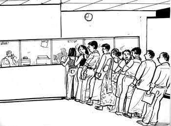

Scene at Employment Exchange
Unemployment is a great curse. It brings to the surface the evil side of human nature. Government has to keep an eye on the unemployed and to keep their numbers down. It has opened employment exchanges in all cities. The unemployed are required to register with these. Whenever there is a vacancy, suitable to their qualifications, they are considered for it. Number of unemployed is rising fast. The employment exchanges are besieged by people who want to register themselves or who want to fine out whether their names are sent up for certain posts. The harried clerks faced with so many anxious persons, trying for priority for themselves become callous and consider every one as a nuisance. There is always a great rush at the windows. The clerks take their own time in verifying and registering. Restless people can be seen standing helplessly in queues for long hours. Some can be seen moving from one window to another as they are told that they have to go to another man or another window. They have to join the other queue and are again at the fag end. Quite often by the time their turn come it is time for closing. They have to go Jump to come another day. Though there are so many people yet no cheerful voices are heard. One could hear people grumbling or cursing their fate. Despair is writ large on their faces. Have they not visited the place for months after months or even years! The only people who make hay there, are the hawkers. For them the long queues, the waiting people are a source of income. They can be seen selling their eatables and tempting the hungry disgruntled people.